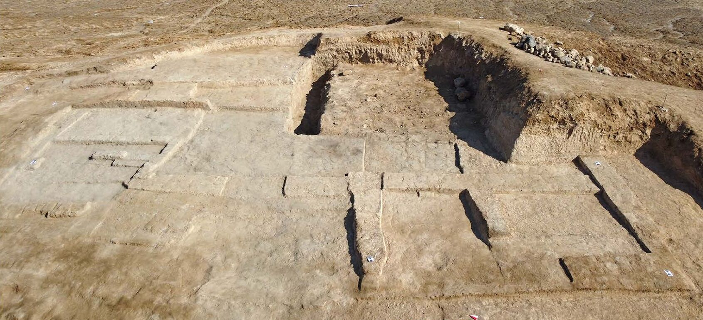
PLOS ONE · 2026 · Southern Iraq
Chemical-mineralogical features and physical properties of archaeological adobe: The evidence from Tell Zurghul/Nigin (Dhi Qar, Iraq)
These mud bricks lasted thousands of years buried. Once dug up, they start to decay again. We asked what they are made of and how they stand up to the local rain, because you can't protect a wall you don't understand.
Excavation exposes them
In use, an earthen wall had plaster on its surface and a roof over its head. After excavation it has neither, and it is directly exposed to the elements.
Conservators have four main options: backfilling, protective shelters, limited interventions with new locally made bricks and mortars, and stabilising treatments such as ethyl silicate or polymer solutions. Choosing among them requires knowing the material in detail. That was our starting point.
My part of the work was the geological and climatic context, the colour measurements, the polarised-light microscopy, and the water and rain tests.
- 70 ha
- The settlement of Tell Zurghul, identified with the Sumerian city of Nigin, in the ancient State of Lagash.
- ~2,500 years
- Of occupation, from the mid-5th to the end of the 3rd millennium BCE.
- < 100 mm
- Of rain a year, mostly from November to April, and it falls in torrents. Summers regularly pass 40 °C.
- 30 samples
- 29 adobe bricks and one earthen plaster, from Mounds A and B, excavated by the Sapienza University of Rome mission (MAIN).
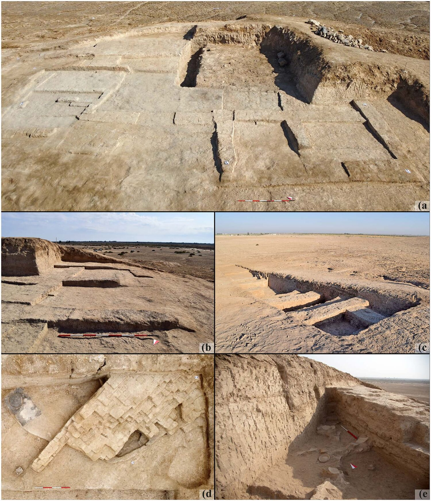
Two mounds, three stories
- Mound B, Late Ubaid
- Most of the samples, from walls of the mid-5th millennium BCE, in panels A–C.
- Mound B, Uruk
- Four samples from a wall at the base of the step trench, dated to the mid-4th millennium BCE.
- Mound A, mid-3rd millennium
- Two bricks and the plaster, from wall W.458 in panels D and E.
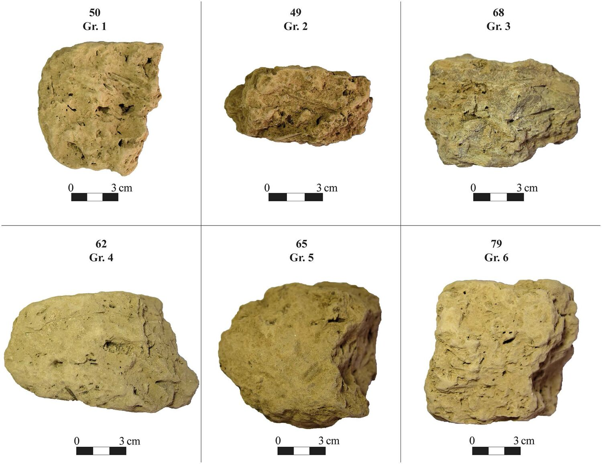
First, by eye
Before any instrument, the samples were sorted by compactness, texture and colour into six groups. One group alone holds 15 of the 30 samples. The bricks look like one family, and the chemistry says the same.
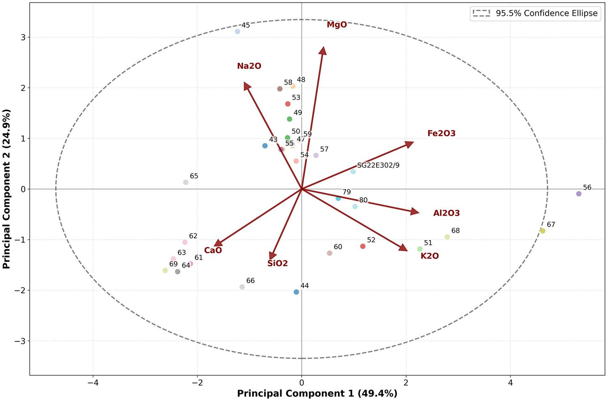
The same earth, for 2,000 years
Chemistry and mineralogy are remarkably uniform. Quartz and calcite dominate everywhere, and only samples 56 and 67 fall outside the 95.5 % variation in this plot. The raw materials look consistently local, in line with the geology of the Lower Mesopotamian Plain.
There are nuances. The 5th and 4th millennium bricks show a wider variety of minerals than the 3rd millennium ones, which suggests differences in clay sourcing or purification. Halite may be a later arrival, from the salinisation of the soil rather than from the recipe.
Same earth, different bricks
Then we looked at thin sections, and the uniformity disappeared. Similar ingredients, prepared with very different proportions of clay and grains. These are three of the nine thin sections, in plane-polarised light. Now cross the polars.
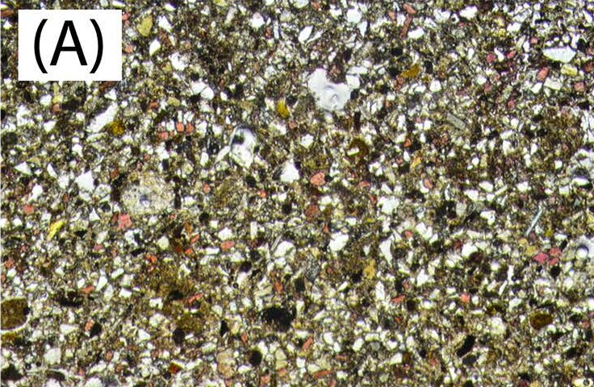
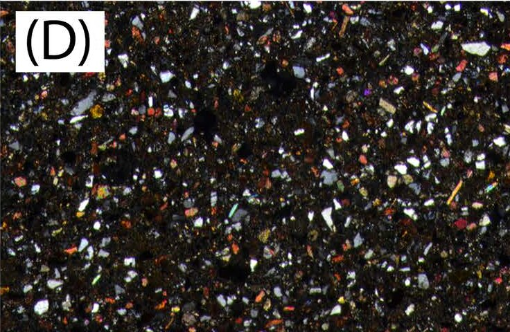
Mostly grains
Sample 62 · Mound B, Late Ubaid
Very high aggregate content and minimal matrix. Angular crystals, possibly crushed on purpose.
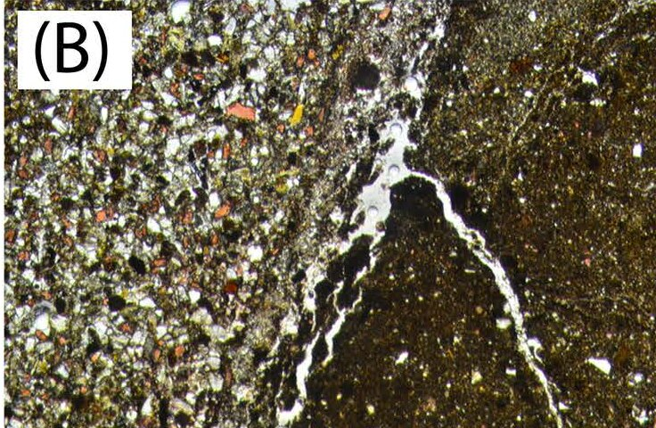
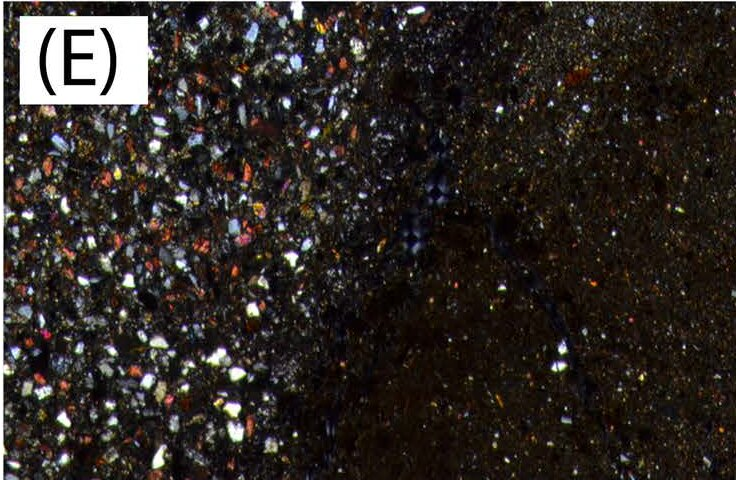
Half and half
Sample 54 · Mound B, Late Ubaid
A sharp division in one section: many grains on one side, fine clay on the other, with pores along the interface.
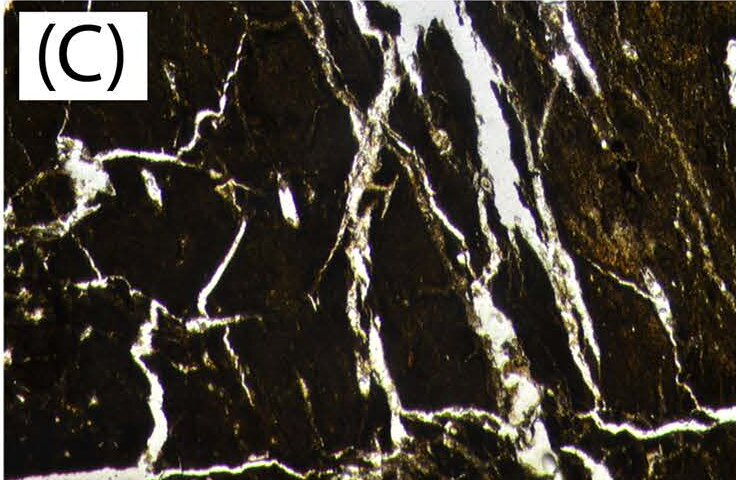
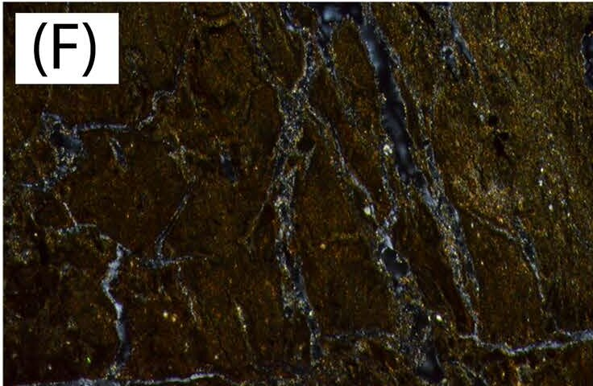
Mostly clay
Sample 68 · Mound B, Late Ubaid
Very high matrix content with few aggregates, and extensive fractures, horizontal and vertical.
Panels cropped from Figure 9 (Selection of the polarised optical microscopy images), Volpi et al. (2026), PLOS ONE 21(2), e0342009, CC BY 4.0. See the full figure with its scale.
Tape, hammer, rain
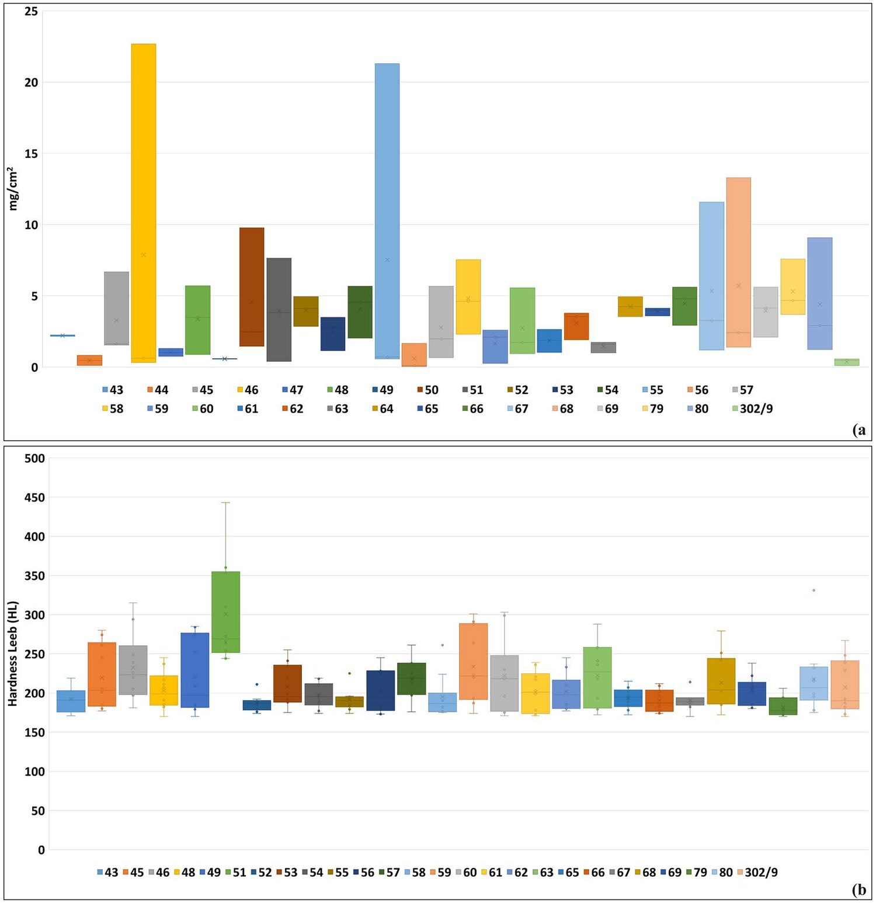
A weak surface, and thirsty
- (A) Tape
- Press a piece of tape, pull it off, weigh what came away. In 20 of the 30 samples, the loss is between 2 and 6 mg/cm².
- (B) Hardness
- Mean values run from 181.8 HL (sample 79) to 300.9 HL (sample 51). Two samples were too soft to give any result.
- Water
- Drops vanish. No static contact angle could be measured on any sample, and most imbibition times are under one second.
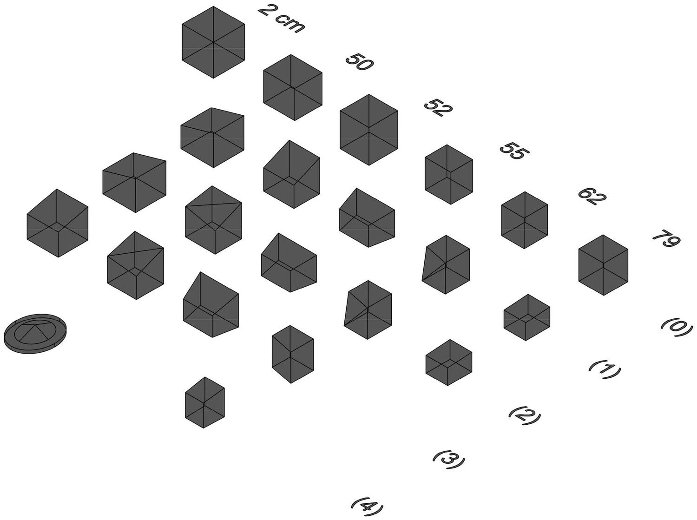
One year of rain, in four days
Five cubes of about 2 cm, one day for each season. We converted local rainfall into millilitres on the cube's surface, poured it all at once with a pipette as the torrential regime demands, and heated the cubes to the region's seasonal maximum temperatures.
- How to read it
- Each diagonal line follows one cube, from its number at the top through steps (0) to (4). The first shape is the reference 2 cm cube.
- 79
- Almost half its volume gone after the first cycle, a formless mass of clay after the second.
- 50, 52, 55
- Gradual loss, cycle after cycle, until no cohesion is left at the end.
- 62
- Still shaped like a cube, with slow, progressive loss.
What decides it is the recipe
Sample 79 · clay-rich matrix
The first to go
Lowest surface hardness and lowest resistance to water. The reason is not necessarily its hardness, but its clay-rich composition. Other clay-rich samples, like 50 and 52, were also among the most susceptible.
Sample 62 · high aggregate content
The last one standing
It does not stand out in the surface tests, and yet it has the best water resistance, thanks to its unbalanced ratio in favour of aggregates, and its more efficient drainage.
Why that is useful
Chemistry and mineralogy alone would have told us these bricks are all the same. They are not, and a conservation plan built on that assumption would miss it. Texture, and the ratio between clay and aggregate, is what needs reading first.
These results give a quantitative basis for choosing treatments, at this site and across the wider region. The cubes tested were mostly chosen among those with intermediate surface properties, with the weakest sample among them, so that the next step can be to try practical solutions on the most vulnerable bricks.
- Keep in mind: the XRD analysis was qualitative, so it cannot say how much of each mineral is present. The rain test used five small cubes, and the plaster is a single sample, the only well-preserved one found so far at the site.
The paper
Volpi, L., Santoro De Vico, F., Arizzi, A., Lanzaro, N., Nadali, D. (2026) Chemical-mineralogical features and physical properties of archaeological adobe: The evidence from Tell Zurghul/Nigin (Dhi Qar, Iraq). PLOS ONE 21(2), e0342009.
doi.org/10.1371/journal.pone.0342009 Data on Figshare
Open access under CC BY 4.0. Cover photo cropped from Fig. 5A of the paper. Samples were exported with the permission of the Iraqi State Board of Antiquities and Heritage (SBAH). Back to Publications